"Ezt a könyvet hű társamnak,
Legjobb barátomnak, Seriffnek ajánlom." (Gazdi)
Kezdődhet a kaland!
Seriff egy kis faluban lakik, és a városban dolgozik.Nagyon fontos munkát végez.
Gazdi műhelyére vigyáz napközben. Ő a biztonsági őr.
Minden este, munka után, felviszi Gazdit a János-hegyre sétálni.
Seriff egy szép napon itt ismerkedett meg Kutyussal.
Először féltek egymástól, de később úgy összebarátkoztak, hogy Seriff attól a naptól fogva csak Kutyus miatt ment fel a hegyre, s még a reggelijéből is vitt neki egy-egy falatkát. Kutyus pedig megmutatta Seriffnek a fészkét, és a kedvenc szikláját.
-Nézd! Innen a legszebb a kilátás!-mondta.
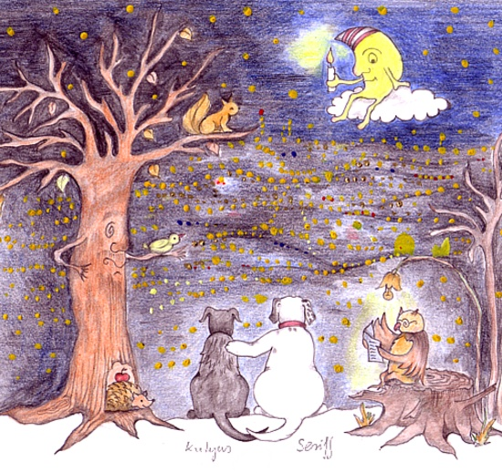Ennél a sziklánál találkoztak minden este, és itt beszélgettek órák hosszat, az élet nagy dolgairól. Kutyus elmesélte, hogy egy szép nagy házban született, amelynek hatalmas kertjében sokat fogócskázott, játszadozott testvéreivel.
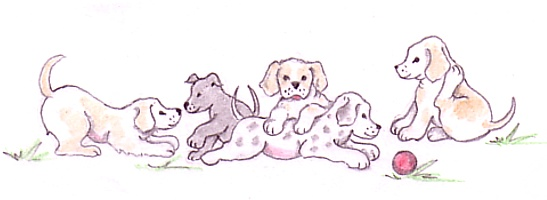Boldogok voltunk és vidámak, de egy nap történt valami. Jött egy ember és elvitte az egyik testvéremet. Azt mondta, hogy azért, mert ő a legszebb. Azután minden nap jött valaki és elvitte valamelyik kölyköt. Már csak ketten maradtunk a húgommal.
Féltünk, hogy elszakítanak minket egymástól, ezért, hogy ne találjanak ránk elbújtunk.
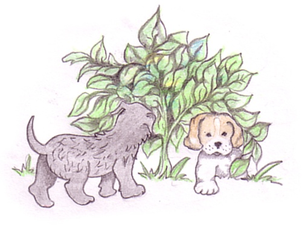 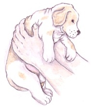Ám az emberek néhány finom falattal kicsaltak bennünket a rejtekhelyünkről és elvitték az utolsó kicsi testvéremet Hugit is. Azt mondták neki, miközben egy nagy guruló dobozba terelték:
-Ne félj kutyuska, jó helyre fogsz kerülni!
-Azt a guruló dobozt autónak nevezik az emberek-oktatta Seriff a barátját.
Az autó azonban sokkal gyorsabb volt nálam és én hamar lemaradtam. Akkor vettem észre, hogy fogalmam sincs, hol vagyok. Eltévedtem! Sokáig kóboroltam, éhes voltam és fáradt. Lepihentem egy nagy fa alá, és mély álomba merültem. Arra ébredtem, hogy egy koldus ember simogat és beszél hozzám.
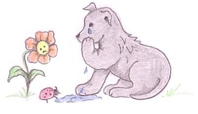-Hát te kiskutya, hogy kerülsz ide? Nagyon elfáradtál ugye? Eltévedhettél, és biztosan éhes is vagy. Jól gondolom?
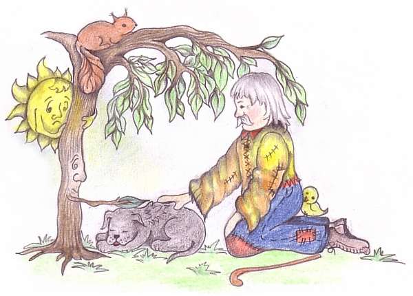- Szegény Kutyus! Neked is pont egy koldus emberrel kellett találkoznod, aki saját maga is alig jut valami élelemhez - mondta szomorúan. - No, de nem baj! Megosztozunk azon, amink van. Tudod, tetszel nekem, te Kutyus. Lehetnénk barátok. Mit szólsz hozzá?
Ekkor butaságot, hogy egy ember barátja legyek, még életemben nem hallottam, de az eleség fele, amelyet felajánlott a koldus ember, csábító ajánlat volt számomra. Így hát igent mondtam neki, és a barátja lettem.
- Önző és buta voltál te, Kutyus! Az egyik gyerekemre emlékeztetsz - szólalt meg Seriff mély hallgatás után, de Kutyus gyorsan félbeszakította...
- Tudom, tudom, most már belátom, hogy buta voltam. Őt is elvesztettem.
- Miért, mi történt? Mondd már Kutyus, ne csigázz! - kérdezte izgatottan Seriff.
- Jó barátok lettünk a koldussal. Igaz, hogy háza nem volt. Itt laktunk ebben az erdőben, a domb mögötti barlangban. Tudod, amit megmutattam neked, ahol most is alszom - magyarázta Kutyus.
- Ott aludt az ember is? Ez furcsa. Az én Gazdim, meleg ágyban alszik! Kivéve, ha éjszaka dolgozik, mert akkor én alszom az ágyában - válaszolta Seriff büszkén, és közben jóleső érzés töltötte el, mert a Gazdi finom szagára és a puha dunyhájára gondolt.
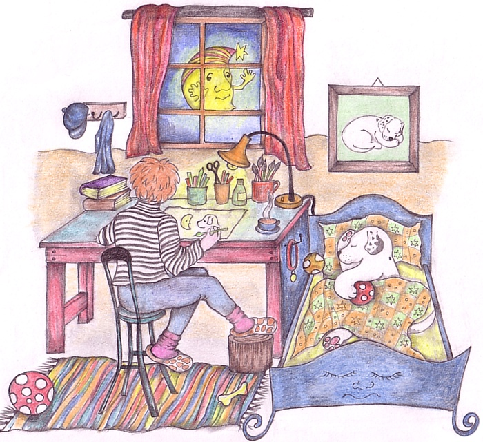- Mi az az ágy, Seriff? - kérdezte Kutyus. - Mindjárt elmagyarázom, te butus, de most inkább meséld tovább a történetet! - türelmetlenkedett Seriff. - Jó, jó. Tehát, ott aludtunk a barlangban a koldus emberrel. Nem volt valami meleg, de ha összebújtunk, nem fáztunk. Éjjel a bagoly őrizte álmunkat...
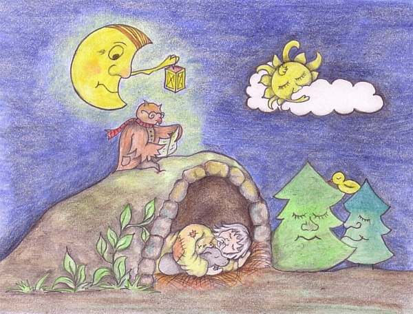Reggelente a koldus elment, s hogy honnan szerezte, nem tudom, de mindig egy kenyérrel tért vissza. Ez volt a reggelink, az ebédünk, és a vacsoránk.
- Miért nem fogtál hozzá egy nyulat, Kutyus? Tudod, milyen finom a nyúlpörkölt kenyérrel? - kérdezte Seriff.
- Próbáltam én, de nem ment. A nyúl nagyon gyorsan szalad, ráadásul cseles is! - válaszolt Kutyus.
- Én már fogtam egyet! - dicsekedett Seriff, azután gyorsan hozzátette:
De nem bántottam! Csak megvizsgáltam közelebbről, hogyan is néz ki egy ilyen gyorslábú "szerkezet". Nagyon izmos lába van! Ezt onnan tudom, hogy vizsgálódás közben jól orrba rúgott! - mesélte Seriff, aztán izgatottan kérlelte Kutyust:
- Mondd tovább! Mi történt a koldussal?
Egy nap elment kenyérért, és nem jött vissza többet. Nem tudom, hol lehet, azóta sem hallottam felőle. Sokáig vártam és kerestem őt, de hiába. Megkértem galamb barátomat, hogy nézzen körül odafentről, de ő sem látta sehol. Eltűnt! Így hát magamra maradtam, és mondhatom, nagyon rossz egyedül. Azért van néhány barátom. Például a bagoly, aki éjjelente vigyáz rám, amíg alszom.
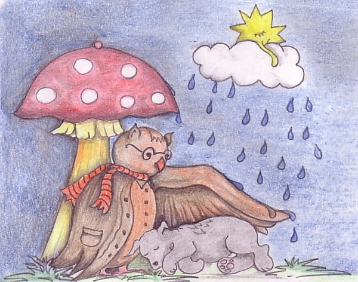Szarka barátom pedig ételt lop nekem a vendéglőből, és itt vagy nekem te is, aki megfelezed velem a reggelidet, és esténként olyan jó veled beszélgetni, játszani, futkározni, de nagyon rossz, amikor elmész! Tudom, tudom, neked dolgoznod kell és vár a Gazdid, de akkor is nagyon hiányzol! Én is szeretnék egy gazdit, aki minden nap velem van, simogat, beszél hozzám, labdázik velem, és meleg ágyikóban alszik. - mondta szomorúan Kutyus, aztán kíváncsian megkérdezte újra:
- Mi az az ágy Seriff?
- Az egy fából készült fekvőhely, amibe meleg pokrócot és tollal bélelt puha párnát és paplant tesznek. Figyelj! Lerajzolom ide a homokba!
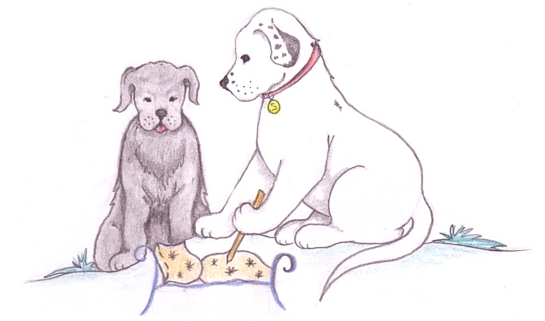- Tudod, Kutyus, neked is lehetett volna gazdid, de te megijedtél és elszaladtál...
- Ezt nem értem - mondta Kutyus.
- Akkor figyelj jól, elmagyarázom! Az emberek, akik elvitték a testvéreidet, az ő gazdáik lettek. Minden testvérednek van már gazdija, aki labdázik velük, és sétálni viszi őket, úgy, mint az én Gazdim engem. - magyarázta Seriff.
Kutyus gyanakodva kapta fel a fejét. - Ebben biztos vagy, Seriff?
- Igen, egészen biztos!
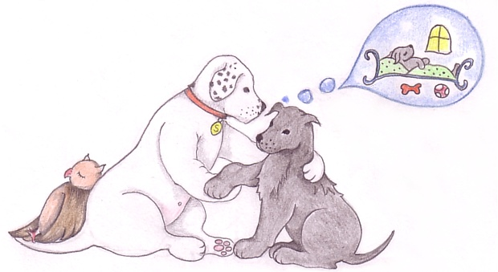Nekem is voltak kölykeim, és őket is elvitték. Nagyon megijedtem, de a Gazdival később elmentünk a gyerekekhez látogatóba, és akkor megnyugodtam, mert láttam, hogy ők is szerető gazdikhoz kerültek, és boldogok. Én meg végre pihenhettem egy kicsit. Nagyon fárasztó volt tíz kis kölyköt tanítgatni.
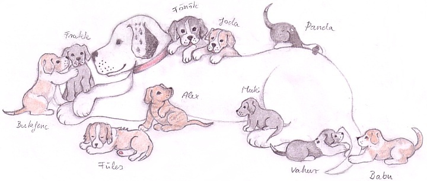A nap minden percében vigyáznom kellett rájuk, rajtuk kellett tartanom a szemem, mert rendkívül elevenek voltak. Folyton összegabalyodtak és úgy gurultak összekapaszkodva, mint egy nagy gombóc. Máskor fölmásztak a Gazdi ágyára, és nem tudtak lejönni, vagy lepottyantak róla. Eltévedtek a Gazdi kertjében, aztán sírva gubbasztottak egy bokor alatt, amíg rájuk nem találtam.
A legkisebbik kölyköm, egy kislány, otthon maradt velem. Őt a Gazdi nem adta oda senkinek. Kis Muknak hívják, és ugyan olyan fekete, mint te.
Nagyon emlékeztetsz egy másik kölykömre is. Bukfenc a neve. Olyan a természeted, mint az övé. Később majd mesélek neked Bukfencről is, de most térjünk vissza hozzád.
Tudod Kutyus, ha nem szaladsz a húgod után, hanem nyugton maradsz, érted is jött volna egy gazdi és most nem lennél ilyen bajban. Ugye, érted? Ez a dolgok furcsa rendje kis barátom.
- Azt hiszem, igazad van, Seriff. Most mi tévő legyek? Rossz egyedül, éhes vagyok és fázom.
Hajnalban sok apró fehérség hullott az égből... Fehér és hideg lett tőle az egész erdő!
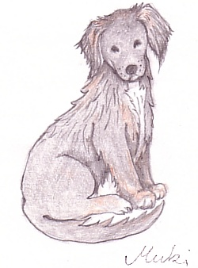Hajnalban sok apró fehérség hullott az égből...Fehér és hideg lett tőle az egész erdő!
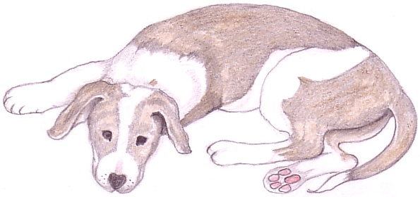- Hahó, Kutyus, azt a sok kis fehérséget, úgy hívják, hogy hó, és az nagyon jó, ha esik, mert akkor már itt jár a közelben a Mikulás! A hó ugyanis akkor esik, amikor a Mikulás rénszarvas húzta szánján, végigszáguld a felhők tetején. Te Kutyus! Támadt egy ötletem! Hogy ez eddig nem jutott eszembe! - kapta föl a fejét Seriff.
- Mire gondolsz barátom?
- Bízz bennem, Kutyus, minden rendben lesz! - vakkantotta vidáman, és elszaladt.
-Sziasztok, naplopó csirkék! -csaholta vidáman -Nem láttátok Liba mamát?
-Bent van az ólban, neveletlen, szedte-vette kutyája- rebbentek szét a tyúkok hangosan kotkodácsolva, amikor Seriff bevágódott a baromfiudvarba.
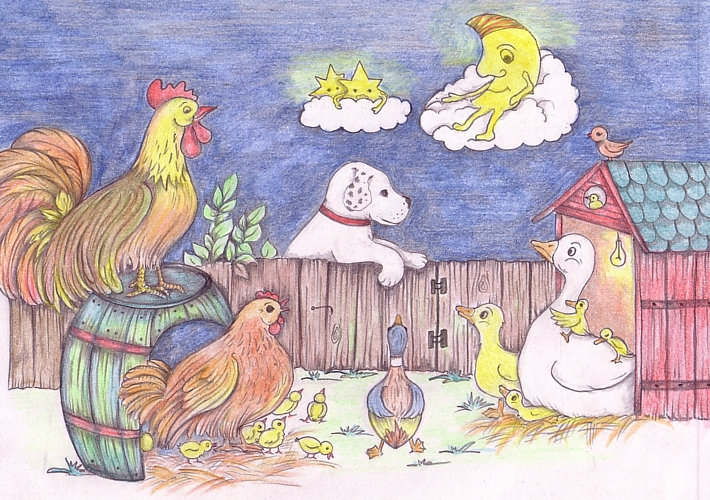Félre az útból, rántott húsnak való népség!-kiáltotta szemtelenül, és bedugta fejét az ólba.
- Jó napot, Liba mama! Szükségem volna egy tolladra. - Minek az neked, ember barátja? - gágogta Liba mama. - Levelet kell írnom a Mikulásnak! - Ugyan már, te gazdi szomorító, hiszen a Mikulás csak mese! - nevetett Liba mama.
- A Mikulás egyáltalán nem mese, Liba mama! A Mikulás tényleg létezik. A Gazdi egyik könyvében olvastam. Igaz, hogy régen nem így hívták. Figyelj csak, elmesélem! Szent Miklós püspök Myra városában lakott, Törökországban. Jó ember volt. Titokban megajándékozta a szegényeket.
Myrában élt akkortájt három pártában maradt lánytestvér. Nem tudtak férjhez menni, mert szegények voltak, nem volt hozományuk. Pedig az egyik lánynak már választottja is volt. Egy este a lány, motoszkálást hallott az ajtónál...
Kinézett és egy zacskó pénzt talált a tornácon, miközben egy piros palástot látott elsuhanni a sötétben az erdő felé. Nem értette. Ki lehet a nagylelkű segítő? Boldog volt, mert így már férjhez mehetett választottjához. Pár nap múlva a másik két lány is kapott hozományt a titokzatos idegentől.
- Ki lehet ilyen adakozó? - gágogta Liba mama.
Szent Miklós püspök, akit ma Mikulásnak hívunk. Már nagyon öreg. A régi püspöki palástja helyett piros prémes ruhát hord, és hosszú, fehér szakálla nőtt. Egy dolog azonban nem változott. Mindenkinek segít, aki rászorul, mert ő nem csak szóval hirdeti a karácsony üzenetét. Az egyik barátom nagy bajba került, az ő nevében írok levelet a Mikulásnak. Nincs gazdája, kóbor kutyus. Akkor hát adsz nekem egy tollat, Liba mama?
- Hát persze, húzz csak ki egyet bátran, drágám! - Drááágááám dráááágáááám Kukkuríkúúú!
- Miket mondasz te, ennek a koszos kutyának? - rikkantott a kakas.
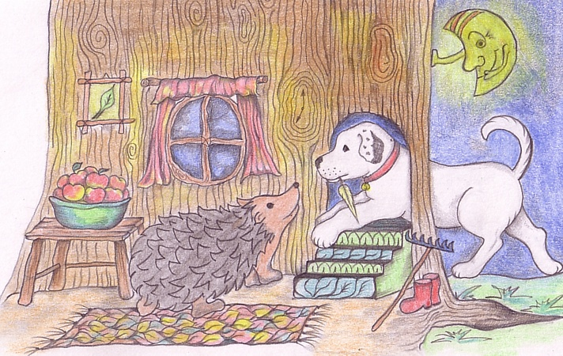De Serif ezt már nem hallotta. Libamama tollával a szájában egyenest a sünihez rohant, hogy levelet kérjen tőle, aztán szedte a lábát hazáig, beszaladt a szobájába, be a Gazdi ágyába. Rögvest nekilátott, és megfogalmazta a levelet.
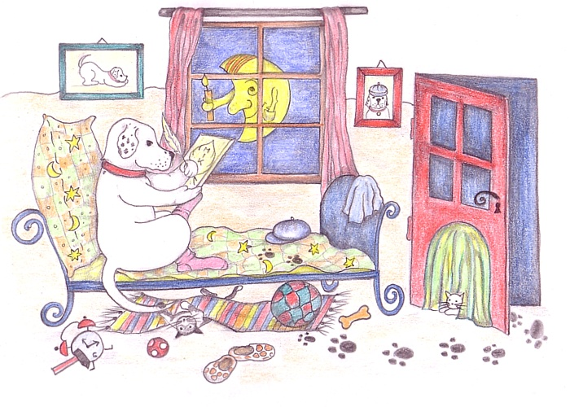Amikor elkészült, átmászott a kerítésen, és futott, ahogy a lába bírta, egészen a postáig.
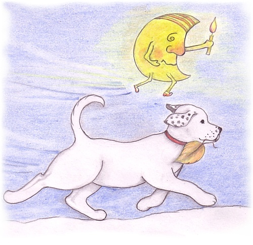A Gazdi már vacsorához hívta, ezért nagyon kellett sietnie, nehogy kiderüljön, kiszökött a házból. Sietve bedobta a levelet a postaládába, és futott is haza. Vacsora után hamar elaludt. Kutyusról álmodott, ahogy új gazdija simogatja fekete buksiját.
Eközben az erdőben Kutyus is álomra hajtotta a fejét. Sötét éjszaka volt, mintha a Hold is a paplan alá bújt volna, csak a szelet szerződtették ma éjjelre zenésznek, aki viszont bőszen dolgozott. Fújt, süvített és tépte a fák koronáját a csontig hatoló hidegben. Minden állat elbújt az odújába várva a hajnali fényt.
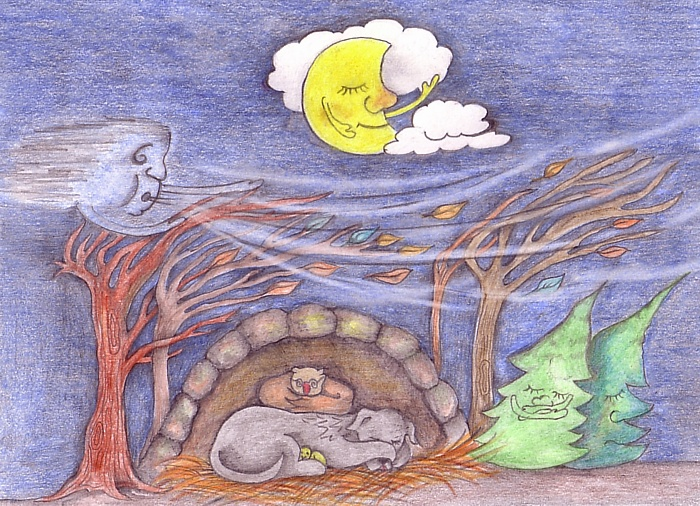A kis falu is nyugovóra tért. Egyvalaki azonban épp most indult útnak, s a sötétséget kihasználva, puha talpakon lopakodott egy baráti találkozóra.
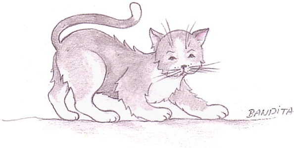A posta padlásán Macska-bált rendeztek az éjjel. Oda indult Bandita, a fekete-fehér foltos két-ballábas kandúr. Bandita gyermekkori nagy ellensége volt Seriffnek. Kikémlelte, hogy Seriff, akit ő csak Nagy Fehérnek hív, levelet írt ma este. Nagy bánatára azt már nem tudta kilesni, hogy ki a levél címzettje, és ez borzasztóan bosszantotta. Ezért is sietett annyira a postai egerésző estre, bár éhes nem volt, mert ellopta a Nagy Fehér maradék vacsoráját.
A postához érve hallotta, hogy barátai már vígan viháncolnak a tetőn. A macskák, látva Bandita érkezését elkezdték a szokásos csúfolódást. Bandita ugyanis a legügyetlenebb egerésző a környéken és mindenki tudja róla, hogy a kutya vacsoráján él, ami bizony nagy szégyen egy falusi macskának.
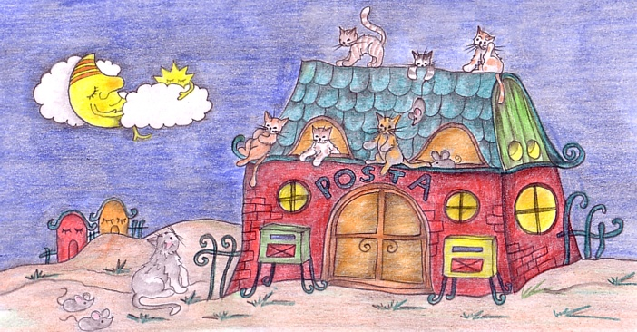- Vigyázz, Bandita, nehogy megkergessenek az egerek! - nevettek hangosan a cicák.
- Ne gúnyolódjatok, ma nem egerészni jöttem!
- Gondoltuk! - vihogtak a többiek - Biztos nem vagy éhes, mert megetted Nagy Fehér maradékát, amíg ő itt járt.
- Itt járt Nagy Fehér? Ez biztos? Láttátok?
- Igen, Te, tesze-tosza jószág. Itt volt és bedobott egy levelet a postaládába, azután elszaladt.
- Melyik ládába dobta? Mondjátok gyorsan!? – nyávogta Bandita izgatottan.
- A zöld színűbe, Te, macskajaj! Különben miért vagy olyan kíváncsi? Biztos nem neked írta.
Bandita azonnal a zöld postaláda tetejére ugrott, belekukucskált. Valóban ott volt a levél! Bedugta mancsát a postaláda nyílásán, és beleakasztotta a körmeit a levélbe.
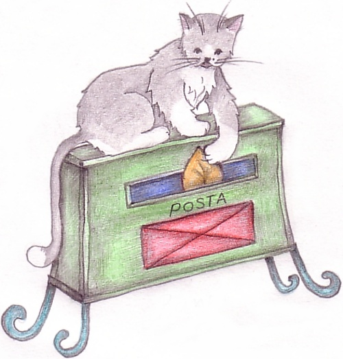- Így ni! Már meg is van! Izgatottan kezdte olvasni, majd hangos nevetésbe tört ki. A többiek felfigyeltek rá.
- Nézzétek ez egér helyett levelet fogott! Gyertek, nézzük meg mit olvas! Mondd már Bandita, mi olyan vicces!
A macskák mind Bandita köré gyűltek. Mancsról-mancsra adták a levelet és csak nevettek, nevettek, vihogtak, nyávogtak.
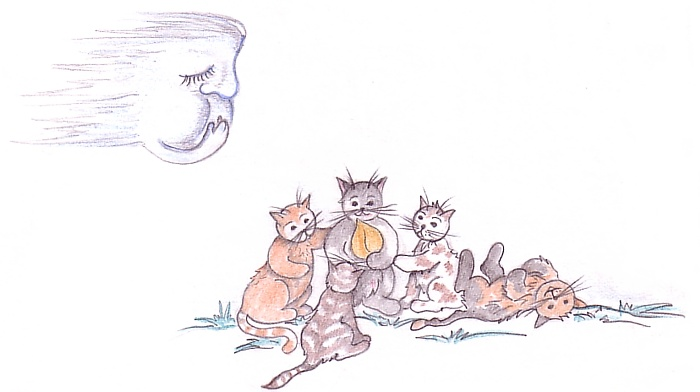- Hogy lehet ez a Nagy Fehér ilyen buta! Elhiszi, hogy a Mikulás létezik! Ha-ha-ha! – gúnyolódtak a kutya levelén. A nagy viháncolásra a szél is feltámadt, odasuhant Bandita mellé, és kikapta mancsából a levelet, mintha csak megunta volna a macskák gúnyolódását.
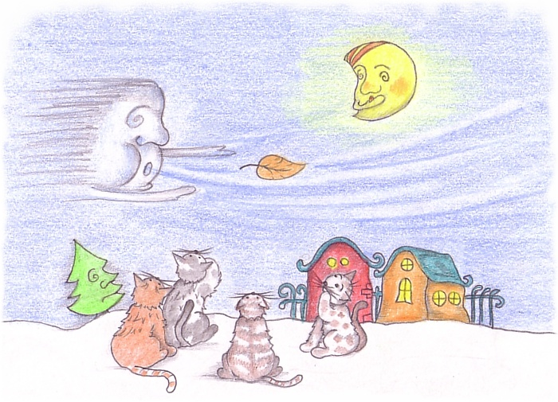A magasba emelte, és csak fújta, fújta egyre messzebb, falun, városon, erdőn, mezőn keresztül, míg végül egy szélvédett fenyőerdőhöz érve, a legöregebb fenyő orra elé pottyantotta a hóba. A fenyő mély álomból ébredve csodálkozva nézte a barna levelet.
- Hogy kerülhetett ez egy örökzöld fenyőerdőbe? – tűnődött. Lehajolt, felemelte, s meglepődve látta, hogy írás is van rajta.
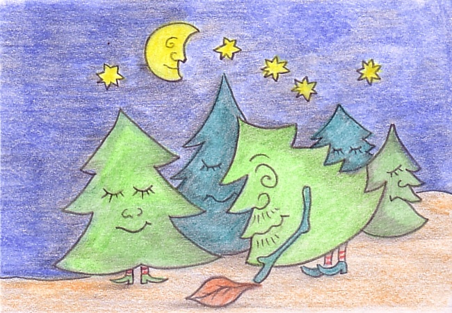Közben felébredt szendergéséből a családja is, és észrevették kezében a levelet. A kis fenyők mind köréje gyűltek
- Olvasd föl Fenyőpapa! - kérlelték az öreg fenyőt.
Fenyőpapa hangosan elkezdte olvasni a levelet.
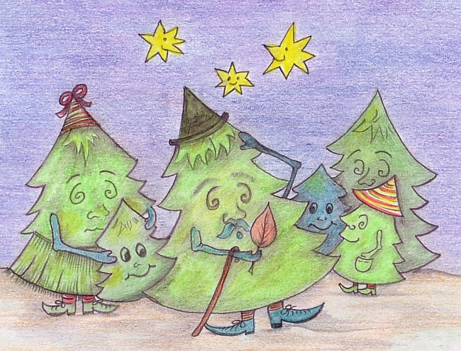 Kedves Mikulás,Kedves Mikulás, Én Seriff vagyok, és a barátomnak, Kóbor Kutyusnak szeretnék karácsonyi ajándékba egy gazdit kérni Tőled. Én az Üveghegy mellett, a harmadik fehér házban lakom. Kérlek, keress meg Mikulás, és én cserébe a kedvességedért, mindenben segítek Neked.
Köszönettel:Seriff- Gyerekek, úgy látom, ez egy nagyon fontos levél! Most mitévők legyünk, Fenyőmama?
- Ez egyszerű! - rikkantott fel az egyik kis fenyő - Majd én elviszem a Mikulásnak azt a levelet. Nemrég láttam őt. Épp a fejünk fölött suhant el, amikor Hóembert építettünk. Emlékeztek fiúk?
- Hogyne emlékeznénk, de olyan gyorsan repítette a rénszarvas, hogy attól félünk, már nagyon messze járhat!
- Az már igaz, de a munkája is sok. És a jó munkához idő kell, ugye? Ha törik, ha szakad, én bizony megkeresem és elviszem neki a levelet! Segítenünk kell Kutyuson! Fenyőpapa rám bízhatod a dolgot!
A fenyőgyerek ezzel a lendülettel már magára is kapta sapkáját és a kis csizmáit. A zsebébe forró krumplit rakott a mamája, hogy ne fázzon a keze, és útnak is indult az éj leple alatt. Nem félt a sötétben, mert egy csillagot kötött a sapkája csúcsára, ami világította az utat. A szél is alább hagyott. Nyugodt tempóban haladt előre a legközelebbi falu irányába, ami még kétnapi járásra volt.
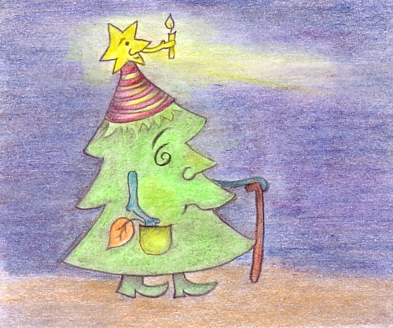Eközben Seriff otthon izgatottan várta a fejleményeket, hisz a levélnek postai úton már meg kelllett érkeznie a Mikuláshoz.
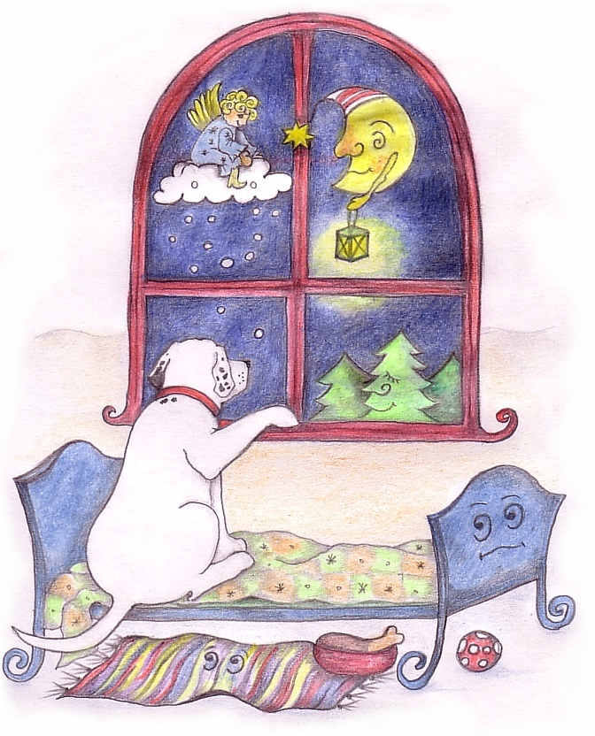- Ilyen sok munkája van, vagy tényleg nem is létezik? Kutyusról sem tudok semmit, mert már karácsonyi szabadságon vagyunk a Gazdival, és nem megyünk a városba. Kutyus biztos azt gondolja, hogy már nem is szeretem.
- Mi lehet vajon szegénnyel? - Ráadásul még Bandita is eltűnt, napok óta nem jött haza. - Őt sem tudom megkergetni, pedig a macskakergetés remek feszültségoldó játék. Jaj, mi lesz ennek a vége? - Jaj nekem! - így morfondírozott magában.
Kutyus a hegyen szintúgy jajgatott...
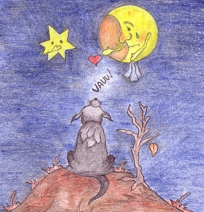Ő nem tudta, hogy Seriff a karácsonyi szünetben nem dolgozik. Honnan is tudhatta volna, hisz ez az első tél az életében, és ráadásul nagyon hideg. "Lehet, hogy bajban van a barátom? Olyan gyorsan elszaladt akkor este. Mi lehet vele? Vagy talán már nem is szeret, azért nem jön el hozzám?"- így tűnődött magában.
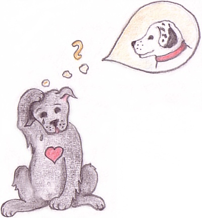Kisfenyő eközben elérte a falu határát. Boldogan szaporázta lépteit. "Mindjárt ott vagyok - bíztatta magát - a gyerekek majd segítenek nekem megtalálni a Mikulást." Ebben a pillanatban a szél újra feltámadt és hatalmas vihar kerekedett.
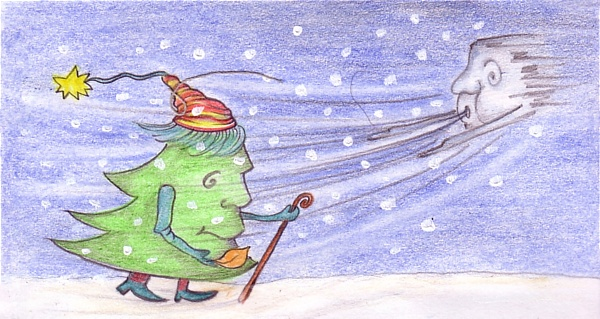Idővel aztán a szél beleunt a mókába, és amilyen gyorsan kerekedett, olyan gyorsan el is állt. Kisfenyő meg orra pottyant. Nagyon megütötte magát, felállni sem tudott.
Most mi lesz? A levél nálam, a Mikulás a közelben, nekem meg eltörött a lábam - gondolta kétségbeesetten. Nem volt más hátra, hangos kiabálásba kezdett:
- Segítség! Segítség! Hahó! Segítség!
Szerencséjére éppen arra síelt egy hóember, aki meghallotta a segélykiáltást, és odasiklott Kisfenyőhöz
- Szia, Kisfenyő, én Hóbalázs vagyok. Mit csinálsz ott a hóban ülve? Találtál valamit? És hogy kerülsz ide? Messziről jöttél? Téged még nem láttalak errefelé. Add a kezed, hadd segítselek föl!
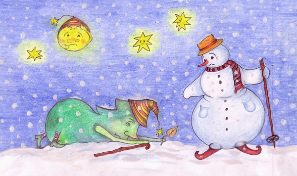- Júj, de szúrós vagy!
- Jaj, Hóbalázs, ne kérdezz már olyan gyorsan, inkább segíts nekem, kérlek! A Mikulást keresem, nagyon fontos levelet hoztam neki. Sürgősen meg kell találnom őt.
- A legjobb helyen jársz. Én ugyanis tudom, hogy hol van. Gyere utánam, megmutatom!
- De nem tudok ám, mert eltörött a lábam!
- Ejnye, ejnye! Lássuk csak! Hoppla-hó, van egy ötletem! - kiáltotta Hóbalázs és ezzel elsiklott a sílécein.
Kisvártatva visszatért egy szánkóval és egy sállal. A közelben játszó gyerekektől kérte kölcsön. Felsegítette a kisszánkóra Kisfenyőt, és a sállal bekötötte a lábát. - Így, ni! Most már mehetünk! Kapaszkodj erősen!
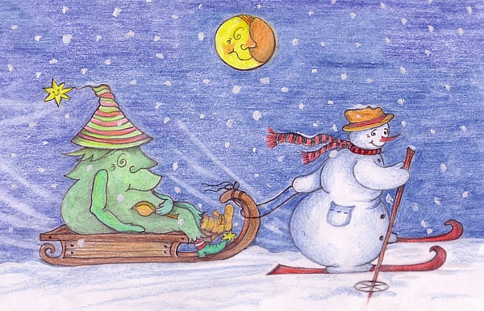A szánkó csak úgy repült a friss hóban, és perceken belül ott termettek a Mikulás háta mögött, aki észre sem vette őket. Nagy munkában volt a krampuszaival. Megszólítani nem merték, csak halkan köhintettek egyet. A Mikulás felfigyelt rájuk. Megfordult és látva a furcsa jövevényeket, lemászott a létráról.
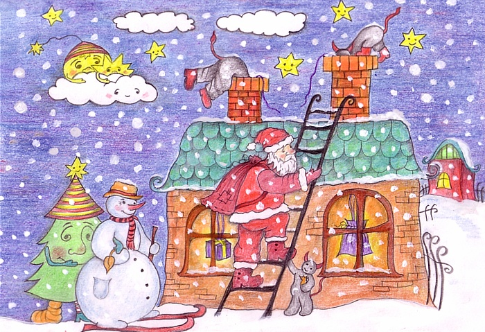- Hát ti mi járatban vagytok?
- Egy rendkívül fontos levelet hoztam neked - felelte bátran Kisfenyő.
- Ami azt illeti, elég későn érkeztetek. Már alig van ajándékom. No, de azért hadd olvassam azt a levelet, aztán majd meglátom, mit tehetek!
Kényelmesen leült egy ajándékcsomag tetejére, feltette a szemüvegét, és komoly arccal olvasni kezdett.
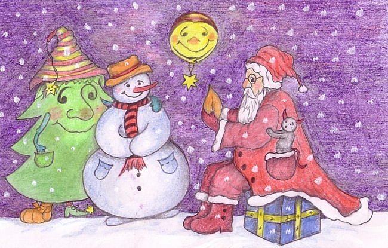A végére érve boldogan csapta össze a kezeit.
- Hát, ilyet! Ha tudnátok, mekkora segítség nekem ez a levél! Bajban voltam egy kívánság teljesítésével. Bármilyen hihetetlen, még a Mikulás is kerülhet bajba, de ti megmentettetek! Nemrég üzenetet kaptam egy kislánytól, aki egy kutyust kért tőlem. Igaz, hogy van már egy kutyája, de a kislány szerint szomorú egyedül, ezért szeretne egy jó barátot neki. Fogalmam sem volt, honnan szerzek kiskutyát, de a ti jóvoltotokból meg fogja kapni! Gyertek gyorsan, keressük meg Seriffet és Kutyust. Siessünk! Sürget az idő!
Mind felültek a szánra, bár Hóember pocakja miatt alig fértek el rajta. A rénszarvas, mint a szélvész repítette őket, és a Hold világította nekik az utat.
Hamarosan megérkeztek Seriff háza elé, aki már várta őket, eléjük szaladt, és örömében a Mikulás ölébe ugrott. Boldogan mutatta az utat Kutyushoz.
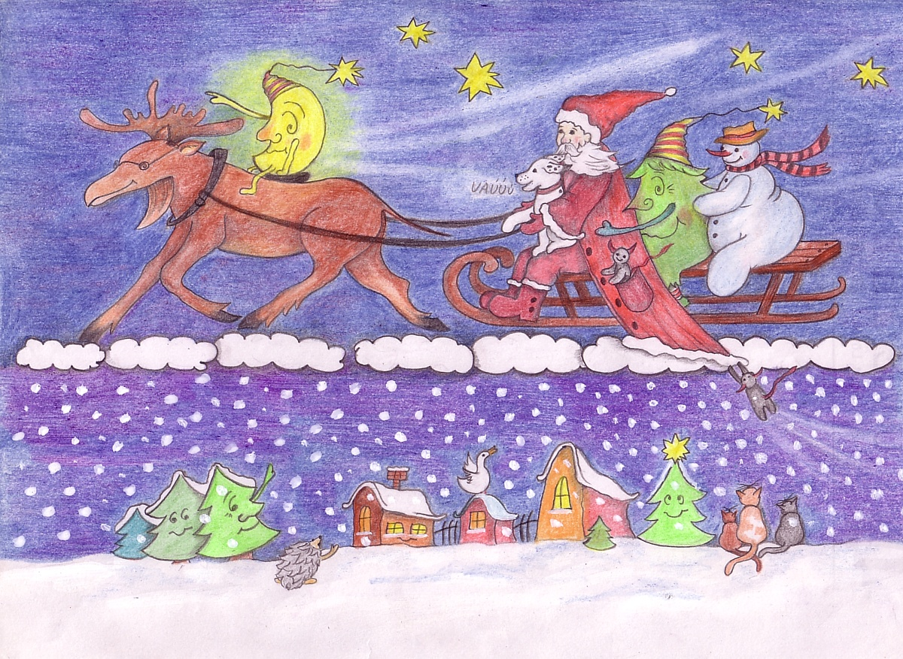Kutyus percről percre szomorúbb lett. Befeküdt egy bokor alá, és ott sírt bánatában, mert azt hitte, hogy megfeledkezett róla a barátja. Megint nagyon egyedül érezte magát.
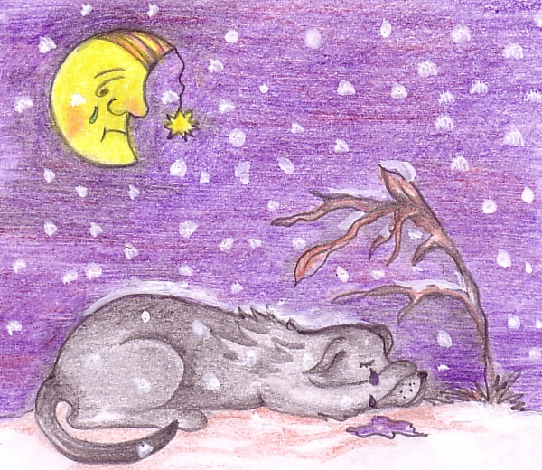Már majdnem elaludt, amikor végre ismerős hangokra lett figyelmes. Mintha barátja hangját hallotta volna a távolból... vagy csak képzelődik?
Nem, ez tényleg ő! Visszajött! Jaj, de jó! Hát, mégis szeret!
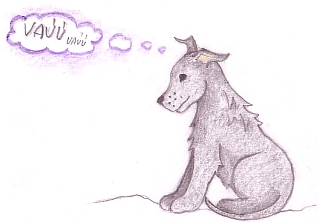- Seriff, barátom! Hát, eljöttél?
- Szia Kutyus, hogy aggódtam érted!
Boldogan vakkantottak egymásnak, és bolondos futkározásba, játékba kezdtek.
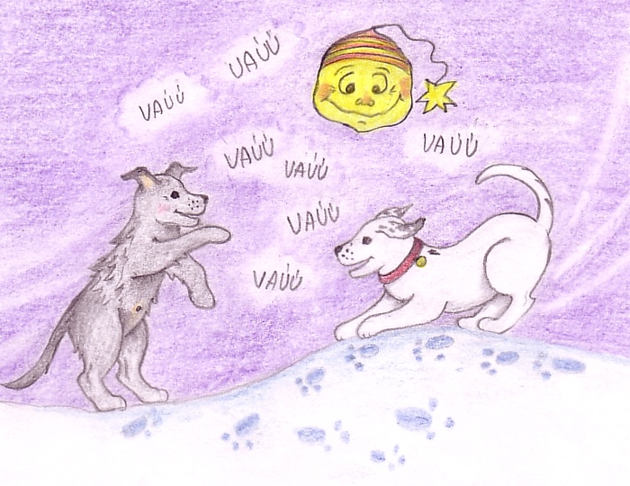A Mikulás csendben mosolygott a bajusza alatt, aztán szelíden rájuk szólt:
- Most már elég a hancúrozásból, mert még van egy fontos dolgunk. El kell vinnünk Kutyust az új gazdijához.
- Az új gazdimhoz? Ez igaz, Seriff?
- Bizony, Kutyus! Gyere gyorsan, ugorj föl a szánra! Valaki nagyon vár téged. Siess, mert nincs sok időnk, mindjárt Szenteste, és nekem is haza kell mennem a Gazdihoz.
- Egy kicsit azért félek.
- Ne félj Kutyus, mire a nap újra felkel, neked is lesz kedves, hű gazdád, aki puha, meleg ágyba fektet, és becéző szavakkal altat.
- Sőt, van még egy meglepetésem számodra Kutyus - mondta a Mikulás - Gyertek hamar, menjünk, menjünk!
A szán újra eliramodott, és kisvártatva meg is állt egy szép nagy kertes ház előtt. A Mikulás letette Kutyust a kapu elé. - No, most menj be szépen! - mondta, majd kinyílt a kapu és Kutyus belépett.
Nagyon meglepődött. A kertből egy másik kutyus ugatása hallatszott. "Ez furcsa. Ennek a kutyának ismerem a hangját..." - csodálkozott.
Hogy ne ismernéd Kutyus, hisz ő a húgod! Ez volt a meglepetés!
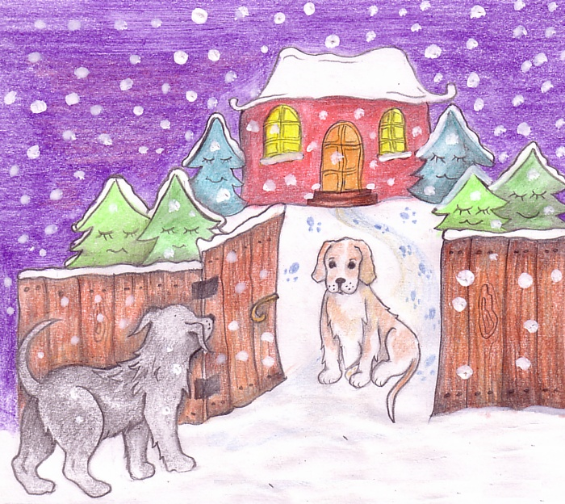- El sem tudom hinni, mennyi ajándék egy napra! Jaj Hugi, Hugikám, én vagyok az, Kutyus!
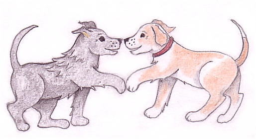- Bátyám, kedves Bátyám, hogy találtál rám? De jó, hogy itt vagy!
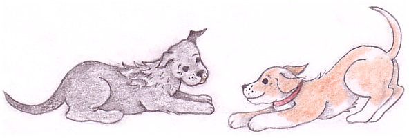A két testvér egymás nyakába ugrott, össze-vissza puszilták egymást, és hatalmas nagy köröket futottak a kertben, hangos vakkantásokkal kísérve örömtáncukat.
A nagy ugatásra egy kislány lépett ki a házból, a szüleivel.
A lány egyenest Kutyushoz szaladt, lehajolt hozzá, megsimogatta, majd kedves hangon így szólt hozzá: "Szia Kutyus, örülök, hogy itt vagy!"
- Honnan tudod a nevemet? - kérdezte meglepetten, de a kislány már nem hallotta. Szüleihez futott, és hangosan kiabálta: "Nézd anyu, van a kiskutyámnak barátja. Biztosan a Mikulás küldte!"
- Miből gondolod kicsim? Lehet, hogy csak egy kóbor kutya.
- Nem kóbor, Anya! Levelet írtam a Mikulásnak, amiben barátot kértem Huginak, hogy legyen kivel futkároznia. Látjátok? Itt van. Milyen aranyosak együtt! Nézzétek, el akarják kapni a hópelyheket!
- Ezt a Kutyust, csak a Mikulás küldhette nekünk! Ugye megtarthatom?
- Persze kicsim, de most már hívd be őket a házba, mert a végén még megfáznak. Etessük meg őket finom husikával.
- Sütit is adhatok nekik? Apa, Kutyus is mellettem alhat, ugye? Kutyusnak fogom hívni. Ni-ni, erre hallgat. Nézzétek, pacsit adott nekem! Anya varrsz neki is párnát és paplant?
A kislány tele volt kérdésekkel izgalmában. Örült újdonsült barátjának.
- Jó itt lenni Hugi. Ezek az emberek nagyon kedvesek, főleg a kis ember. Hát, ilyen egy jó gazdi?
- Igen Bátyus, ilyen. Ők nagyon jó Gazdik. Jaj, Bátyus, nem tudom, hogyan találtál rám, de jó, hogy itt vagy, nagyon hiányoztál!
- A Mikulás és a barátom, Seriff segítettek. Seriffet majd bemutatom neked, jó? És mindent elmesélek részletesen, mert sok minden történt ám velem, amióta elváltak útjaink.
- Rendben van, testvérkém. Bőven lesz időnk mindenre. Többé sosem hagyjuk el egymást. Most pedig aludjunk, mert biztosan elfáradtál, nehéz napod lehetett.
- Jó éjszakát, Hugi!
- Szép jó éjszakát, Bátyám! Álmodj finom füstölt csonttal!
Aki még nem alszik, annak elmesélem, hogy mi történt másnap.
Kutyus reggel felébredt és körülnézett a szobában. Az ablakon bemosolygott a nap, a húga mellette szuszogott, és a kislány átölelte. Végre boldognak érezte magát. "Igaza volt Seriffnek. Mire a nap újra felkelt, hű gazdim lett. Köszönöm barátom!" - suttogta hálásan
A baráti szövetség a két kutya között megmaradt, és új tagokkal is bővült a kis társaság. Kutyus, Hugi, Seriff és a Gazdik elválaszthatatlanok lettek. Mikor a Nap elalszik, és a Hold felgyújtja a csillagokat, mind együtt mennek fel a János-hegyre megbeszélni az élet nagy dolgait.

{kind=link}
{kind=link}
{kind=link}